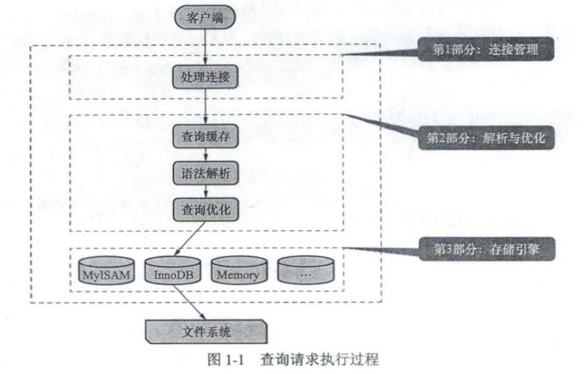

mysql可以分为客户端和服务端，服务器接收客户端发送的请求，与存储的数据进行交互，然后向客户端响应信息。客户端和服务器都是一个进程，所以它们之间的通信是进程间通信。服务器启动时会默认申请3306端口号，在这个端口号上等待客户端进程进行连接，也就是服务器默认监听3306端口。

连接管理：
每当一个客户端进程连接到服务器进程时，服务器进程都会创建一个线程专门处理与该客户端的交互，当该客户端退出时，服务器不会立即销毁线程，而是会将线程缓存起来，另一个客户端连接时，将缓存的线程分配给新的客户端，避免频繁创建和销毁线程。
查询缓存（弃用）：处理过的请求和结果缓存起来，下一次有一样的请求，直接从缓存里找。如果请求文本中有任何不一样，都不会命中缓存。如果请求中包含某些系统函数、用户自定义变量和函数、系统表，则请求不会缓存，例如请求中有now函数，两次调用返回的结果不应该一样。缓存系统会监测缓存涉及的表，如果表有修改，则删除有关的查询缓存。
语法解析：判断请求的语法是否正确，算是一个编译过程，涉及词法解析，语法分析，语义分析等阶段。
查询优化：语法解析后，服务器获取到了需要的信息，例如要查询的表和列是哪些，搜索条件等。优化程序会对语句进行优化，如外连接转换为内连接、表达式简化、子查询转为连接等等。优化的结果是生成一个执行计划，执行计划表明了应该使用哪些索引执行查询，表之间的连接顺序是啥样等等。可以用explain语句查看语句的执行计划。
存储引擎：以前叫做表处理器，功能是接收上层传下来的指令，然后对表中的数据进行读取或写入操作。表是由一行一行的记录组成的，但这是一个逻辑上的概念。存储引擎负责：在物理上如何表示记录，怎么从表中读取数据，怎么把数据写入具体的物理存储器上，等等。处理请求的过程划分为server层和存储引擎层，上面说的从连接管理到查询优化这些不涉及真实数据存取划分为server层的功能。各种不同的存储引擎为server层提供统一的调用接口，包含了几十个底层函数，例如“读取索引第一条记录”，“读取索引下一条记录”等等。server层与存储引擎层交互时，一般是以记录为单位的，（记录就是一条或者说一行数据）。返回记录时，server层在判断某条记录符合要求之后，先将其发送到一个缓冲区，等到该缓冲区满了，才向客户端发送真正的记录，缓冲区大小由系统变量net_buffer_length控制，（缓冲区的作用是减少网络传输的频率和开销）。存储引擎最常用的是InnoDB和MyISAM，偶尔会有MEMORY，不同的存储引擎支持不同的功能。
show engines；查看服务器支持的存储引擎。存储引擎是负责对表中的数据进行读取和写入操作的，可以为不同的表设置不同的存储引擎，也就是说，不同的表，可以有不同的物理存储结构，不同的读取写入方式。
启动选项：mysql –help或mysqld –verbose –help等命令可以查看支持的启动选项，例如，–skip-networking或者–default-storage-engine=MyISAM。
命令行中设置的启动选项只对当次启动生效，编写配置文件会方便一些。程序启动时会在多个路径中查找配置文件，例如：/etc/mysql/my.cnf。
系统变量：查询show variables [like 'something'];，like表达式中可以使用通配符来进行模糊查询。
系统变量有作用范围之分，分为global和session，也就是全局范围和会话范围。多个客户端可以连接到一个服务器上，客户端之间的系统变量可以是不同的。服务器会为每个连接的客户端维护一组会话变量。设置系统变量的命令：set [global | session] key = value;。用show variables查询时也可以在show后面加上范围。如果客户端修改了global范围的值，不会影响已经连入的客户端，只会影响后续连入的客户端。
服务器维护了一些状态变量，显示了程序的运行状态，使用show [global|session] status [like ''];来查看。
字符集：ASCII，128个字符，1个字节。GBK，1-2个字节。UTF-8，1-4个字节。在mysql中utf8是utf8mb3（阉割版，1-3个字节），要存储emoji需要用utf8mb4（1-4个字节存储，默认）。查看字符集：show charset [like ''];
比较规则：show collation [like ''];，一种字符集可能对应多种比较规则。后缀中ci、ai等表示是否区分重音或大小写。
mysql有四个级别的字符集和比较规则：服务器级别，数据库级别，表级别，列级别。
服务器级别：系统变量character_set_server和collation_server，默认为utf8mb3。
数据库级别：可以在create database和alter database时指定character set和collate。系统变量character_set_database和collation_database。注意不能通过修改这两个系统变量来修改某数据库的字符集和比较规则，要修改需要使用alter database语句。
表级别：可以用create table和alter table语句指定字符集和比较规则。
列级别：对于存储字符串的列，同一个表中不同的列可以有不同的字符集和比较规则。可以用create table和alter table语句修改。注意如果列中原有的数据不能用修改后的字符集表示，则会报错。
字符集和比较规则相互关联，只修改一项，另一项会跟着变化。只修改字符集，比较规则变为修改后字符集默认的比较规则，只修改比较规则，字符集变为修改后比较规则对应的字符集。
知道了字符集，就能知道数据占用存储空间的大小。
如果编码和解码使用的字符集不一样，就会产生乱码。
![[截屏2025-01-14 10.10.32.png]]
![[IMG_AE4C10FA2F83-1.jpeg]]
这三个系统变量都是session级别。字符集的转换主要有下面几种：
- 客户端发送的请求采用哪种字符集编码？操作系统的字符集
- 服务器接收到请求后认为它是用哪种字符集编码的？character_set_client
- 服务器在运行过程中会把请求转换为哪种字符集？character_set_connection
- 服务器向客户端返回结果时，采用哪种字符集？character_set_results
- 客户端收到响应后，怎么将其写到控制台中？操作系统的字符集
InnoDB
数据划分为若干个页，以页作为磁盘和内存之间交互的基本单位。页的大小默认为16kb，由系统变量innodb_page_siz指定，服务器运行时不能修改页的大小。
记录在磁盘上的存放形式被称为行格式，目前有四种行格式：compact，redundant，dynamic，compressed。
compact行格式：![[IMG_59A76F6AC2E9-1.jpeg]]
一条记录分为记录的额外信息和记录的真实数据。
记录的额外信息：服务器为了更好的管理记录而不得不额外添加的信息。
变长字段长度列表：mysql支持一些变长的数据类型，例如varchar(10)，真正存放的数据长度是不固定的，所以需要将数据占用的字节数存储起来，逆序放在变长字段长度列表中。
具体存储长度的时候，需要考虑使用一个还是两个字节存储长度，如果理论上的字段最长值<=255，则可以用一个字节（两个16进制数，最大表示255）存储。注意InnoDB在读取该长度列表时先查看表结构，如果理论上存储的最大值不大于255，则会认为用一个字节存储长度。如果理论上的字段最长值>255，则需要看实际存储的数据占用字节数L，如果L<=127，则用一个字节，否则用两个字节。
读取变长字段长度列表时，先查看表结构，如果该字段最大长度小于等于255，则表示最多也就用一个字节，直接读取一个字节就行。那如果该字段最大长度大于255，则一个字节可能放不下，这时候要看实际数据的长度，InnoDB使用该字节的第一个位来进行标识，如果第一个位为0，则表示实际数据长度小于等于127，用一个字节存放，如果第一个位为1，则表示实际数据长度大于127，用两个字节存放长度。
综上所述，如果该变长字段允许存储的最大字节数超过255字节，并且真实数据占用的字节数超过127字节，则用两字节来表示真实数据占用的字节数，否则用一个字节。
另外，如果字段的内容为null，则长度列表不存储该字段长度。如果所有字段都不是变长的或者变长字段的值都为null的话，就不存在长度列表。
null值列表：将一条记录中值为null的列统一管理，将每个允许存储null的列对应一个二进制位，按照列顺序的逆序排列，二进制位为1时，表示该列对应的字段值为null。null值列表需要用整数个字节的位表示，不足的在高位补0。
记录头信息：固定5个字节，前4个位也被称为info bit。
![[IMG_C1CAB7D358A8-1.jpeg]]
记录的真实数据：除了真正的数据之外，mysql会为每个记录默认添加一些列（也称为隐藏列），![[IMG_003051D0EEE4-1.jpeg]]
InnoDB表的主键生成策略：优先使用用户自定义的主键，如果没有自定义，选择不允许存储null值的unique键作为主键，这类键也没有的话，就默认添加一个row_id作为主键。
char(M)列的存储格式：如果使用的是定长编码字符集，例如ascii，则char(10)占用的长度不会存放在变长字段长度列表中。但如果使用的是变长编码字符集，即使字段是char(10)，这一列的值占用的字节数也要存放在变长字段长度列表中。
还规定，采用变长字符集的char(M)列要求至少占用M个字节，而varchar没有这个要求。比如用utf8的char(10)列，即使存储一个空字符串，也要占用10个字节，主要是希望以后更新该字段时，如果新值还是小于10个字节的话，可以直接更新，不用重新分配空间。
在compact和redundant行格式中，对于占用存储空间非常多的列，在真实数据处只会存储一部分数据（前768字节），剩余的数据分散存储在几个其他的页中，然后在真实数据处使用20个字节存储指向这些页的地址和分散在其他页面中的数据占用的字节数。
dynamic和compressed行格式在处理溢出列时，将所有真实数据都存储到溢出页中，compressed还会用压缩算法对页面进行压缩。